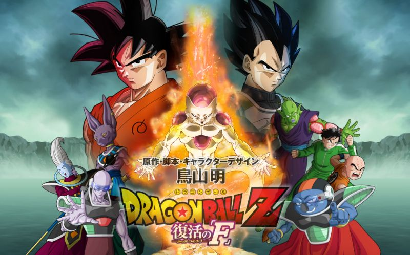

Dragon Ball Z: Fukkatsu no F


Titluos alternativos: (ドラゴンボールZ 復活の「F」 Doragon Bōru Zetto: Fukkatsu no Efu?, lit. Dragon Ball Z: Resurrección de F)
Es la decimonovena película de la franquicia Dragon Ball, la decimoquinta de Dragon Ball Z y la secuela de Dragon Ball Z: La batalla de los dioses.
Estreno el 9 de noviembre del 2020 en los cines japoneses.6
Han pasado ya más de 15 años desde que Freezer murió a manos de Trunks, y ahora mismo se encuentra en infierno donde es “torturado” por peluches danzarines y unas hadas vestidas de conejitas. Pero algunos de sus hombres no se han olvidado de él. Entre ellos se encuentra Sorbet, quien ahora dirige el ejército del tirano y que, al no encontrar el nuevo planeta de los namekianos, decide acudir a la Tierra para apoderarse de las Dragon Ball que están recopilando Pilaf y su pandilla. Tras obtener su deseo, tienen que regenerar el cuerpo despedazado de Freezer. Al revivirlo al completo, Sorbet esperaba que pudieran recuperar la grandeza del ejército de Freezer, pero este tiene claro que tiene que vengarse de Son Goku por la humillación que padeció en Namek. Y por más que su fiel soldado le avisa de que ahora Son Goku tiene un poder muchísimo mayor, con el que incluso pudo derrotar a Majin Boo, a Freezer no le sorprende y decide entrenar para hacerle frente y matarle.
De este modo, tras cuatro meses de duro entrenamiento, Freezer acude a la Tierra con 1.000 soldados. Jako, el patrullero galáctico amigo de Bulma, acude para avisarles de la llegada del villano, pero Son Goku y Vegeta se encuentran entrenando en el reino de Bills bajo la tutela de Whiss, de modo que Gohan, junto con Krilin, Mutenroshi, Piccolo, Tenshinhan y Jako, tendrán que ganar tiempo para detener a Freezer hasta que llegue Son Goku.
Goku
Vegeta
Freezer